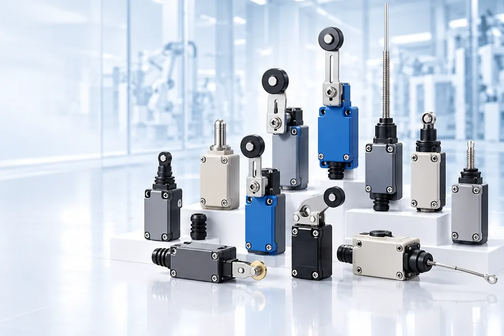

Vì sao công tắc hành trình thông thường hỏng sớm
Ở cầu trục ngoài trời, thiết bị bốc dỡ cảng và boong tàu, công tắc hành trình hỏng theo ba kiểu, gần như không kiểu nào là do hỏng tiếp điểm:

- Ăn mòn. Vỏ nhôm hoặc thép mạ gặp hơi muối, hơi axit hoặc kiềm sẽ rỗ trong vài tháng. Bu lông và con lăn thường là chỗ hỏng trước tiên, không phải thân.
- Lò xo hồi yếu dần. Sau hàng trăm nghìn lần tác động, cần gạt không về đúng vị trí, gây sai vị trí dừng — kiểu hỏng nguy hiểm vì thiết bị vẫn "chạy được".
- Vấu tác động (dog) không đều. Dầm cong, ray mòn, tải lệch làm vấu đập vào cần gạt theo góc thay đổi. Lực đập bất thường truyền thẳng vào cơ cấu.
Dòng công tắc hành trình Qlight xử lý cả ba: thân và đầu bằng STS316L, bu lông, đai ốc, con lăn và thanh lò xo bằng inox, và hệ lò xo hồi kép độc quyền giữ đặc tính vận hành ổn định sau thời gian dài sử dụng.
Một nhóm, hai series
Toàn bộ danh mục nằm trong nhóm công tắc hành trình hạng nặng, gồm hai series khác nhau về cấp bảo vệ và độ cứng vững:
| SW2TS Series | SW2MS Series | |
|---|---|---|
| Cấp bảo vệ | IP66 | IP67 |
| Kích thước | 43 × 51,3 × 160,5–200 mm | 68 × 88,5 × 168,8–203 mm |
| Vật liệu thân, đầu | STS316L | STS316L |
| Điểm mạnh riêng | Kích thước và lỗ bắt giống công tắc tiêu chuẩn | Độ bền cơ khí cao, hấp thụ được chuyển động dog không đều |
Đây là điểm quyết định khi chọn giữa hai series:
SW2TS để thay thế trực tiếp — theo catalog, series này có lỗ bắt và kích thước ngoài giống công tắc tiêu chuẩn, nên thay vào vị trí cũ không phải khoan lại giá đỡ. SW2MS khi cơ cấu tác động không ổn định — dầm võng, ray mòn, vấu đập lệch. Thân lớn hơn nên cần kiểm tra lại chỗ trống trước khi chọn.
Ba kiểu cần gạt
Cả hai series đều có chung ba kiểu cần, ký hiệu bằng hậu tố:
| Hậu tố | Kiểu cần | Chọn khi |
|---|---|---|
-AL | Con lăn chỉnh được (adjustable roller lever) | Cần tinh chỉnh vị trí tác động sau lắp đặt |
-RL | Con lăn thường (roller lever) | Vị trí tác động cố định, cơ cấu chuẩn |
-LRL | Con lăn lớn, chỉnh được (adjustable large roller lever) | Vấu tác động lớn, tốc độ cao, va chạm mạnh |
Chiều dài tổng thay đổi theo kiểu cần — với SW2TS là 160,5 mm (RL), 192,5 mm (LRL) và 200 mm (AL).
Ba tiêu chí chọn
1. Môi trường ăn mòn
STS316L là lý do chính để chọn dòng này. Theo catalog, vật liệu cho khả năng chống ăn mòn và chịu muối vượt trội, đặc biệt phù hợp môi trường biển và môi trường có khí hóa chất. Bu lông, đai ốc và các chi tiết ngoài cũng bằng inox — đây mới là điểm phân biệt thật với công tắc "vỏ inox" mà ruột vẫn thép mạ.
Với công trình biển, nhà máy hóa chất có khí axit hoặc kiềm, thiết bị cảng — đây là tiêu chí bắt buộc, không phải tùy chọn.
2. Nhiệt độ làm việc
Ngoài bản tiêu chuẩn, Qlight nhận đặt hàng theo yêu cầu hai bản nhiệt độ:
| Bản | Dải nhiệt độ |
|---|---|
| Nhiệt độ thấp | −40 °C đến +40 °C |
| Nhiệt độ cao | +50 °C đến +120 °C |
Bản nhiệt độ thấp dùng micro switch chịu lạnh, mỡ nhiệt độ thấp và gioăng silicone — không phải chỉ đổi vỏ.
Lưu ý thực tế cho thị trường Việt Nam: hai bản này là hàng đặt theo yêu cầu (upon request), nên phải khai báo ngay trong RFQ đầu tiên. Phát hiện muộn sẽ phải đặt lại từ đầu với lead time riêng.
3. Cấp bảo vệ theo cách rửa và vị trí
| Vị trí | Cấp cần có | Series |
|---|---|---|
| Trong nhà, có bụi và nước bắn | IP66 | SW2TS |
| Ngoài trời, boong tàu, có thể ngập tạm thời | IP67 | SW2MS |
Ứng dụng điển hình theo catalog
- Cầu trục (overhead crane)
- Băng tải quy mô lớn
- Máy móc công nghiệp nặng
- Công trình nhà máy ngoài trời
- Thiết bị boong tàu
- Thiết bị bốc dỡ hàng tại cảng
- Nhà máy hóa chất có khí axit hoặc kiềm ăn mòn
Bốn nhóm cuối là nơi dòng này thực sự khác biệt so với công tắc hành trình phổ thông — và cũng là các ngành Fast Group phục vụ thường xuyên.
Bảng chọn nhanh
| Tình huống | Gợi ý |
|---|---|
| Thay công tắc cũ, không muốn khoan lại giá | SW2TS — lỗ bắt giống bản tiêu chuẩn |
| Cầu trục ngoài trời gần biển | SW2TS hoặc SW2MS tùy khả năng ngập |
| Vấu tác động đập lệch, dầm võng | SW2MS |
| Kho lạnh, thiết bị vùng lạnh | SW2TS/SW2MS bản nhiệt độ thấp −40 °C |
| Gần lò, khu nhiệt độ cao | Bản nhiệt độ cao +120 °C |
| Cần tinh chỉnh điểm tác động sau lắp | Kiểu cần -AL |
| Vấu lớn, tốc độ cao | Kiểu cần -LRL |
Nếu khu vực lắp đặt có khí cháy nổ, công tắc hành trình phải theo chuẩn phòng nổ riêng — xem nhóm thiết bị báo hiệu chống cháy nổ để biết cách đối chiếu Zone và nhóm khí, và trao đổi với Fast Group trước khi chọn.
Fast Group
Dòng công tắc hành trình chưa có bảng mã hàng cấu hình sẵn trong catalog phân phối — mỗi đơn được chốt theo series + kiểu cần + bản nhiệt độ. Khi gửi RFQ, nêu:
- Series và kiểu cần (
AL/RL/LRL), hoặc mô tả cơ cấu nếu chưa chắc - Thiết bị lắp lên: cầu trục, băng tải, thiết bị cảng, thiết bị boong tàu…
- Môi trường: gần biển, khí hóa chất, kho lạnh, gần lò
- Nhiệt độ làm việc thực tế tại vị trí lắp
- Nếu thay thế: model công tắc đang dùng và kích thước lỗ bắt hiện có
Gửi qua trang liên hệ. Có ảnh chụp vị trí lắp và vấu tác động thì đề xuất sẽ chính xác hơn nhiều.